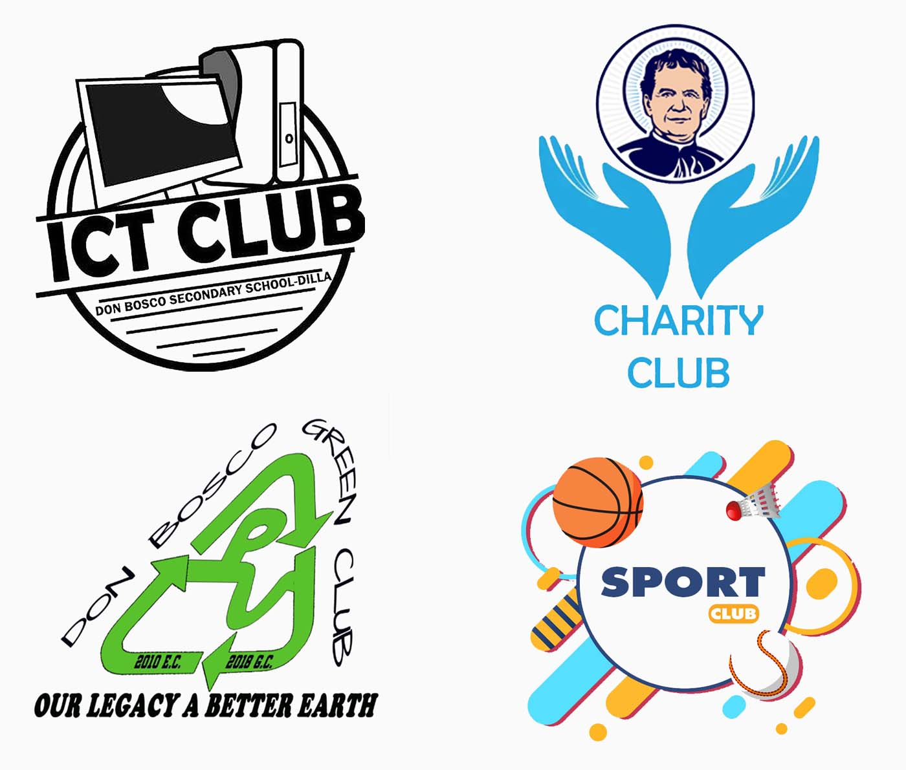
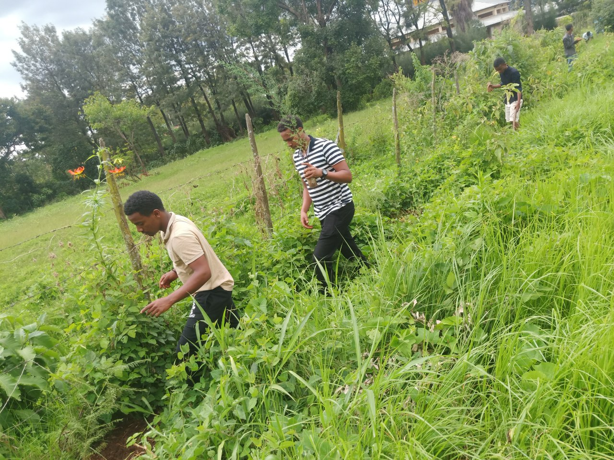
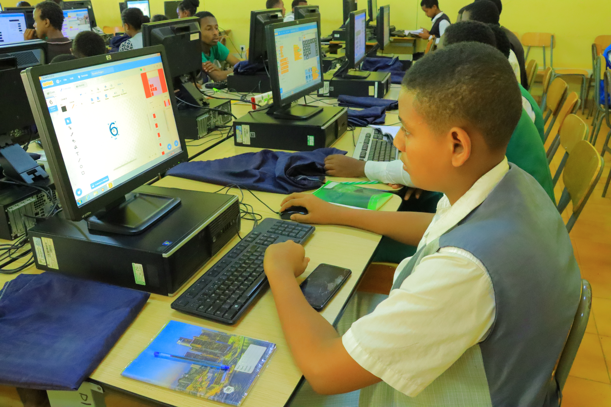
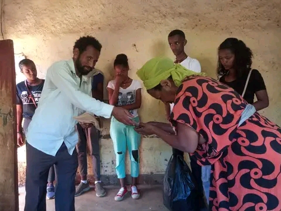
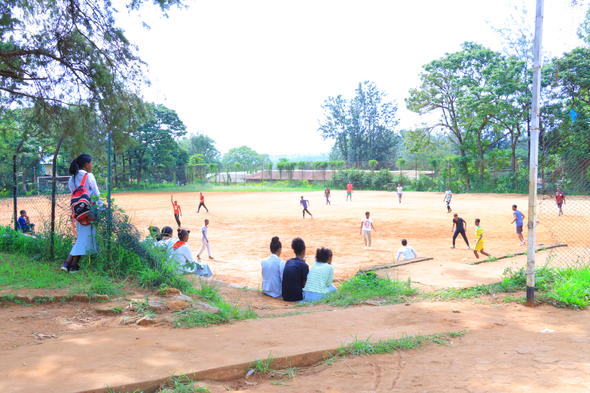
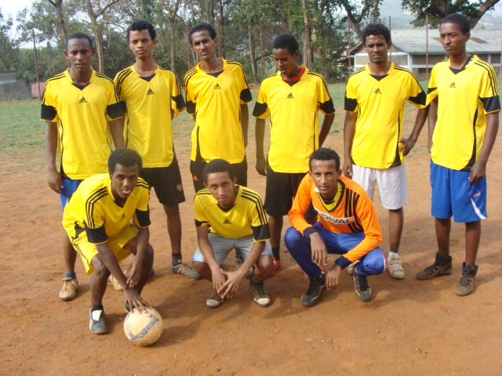
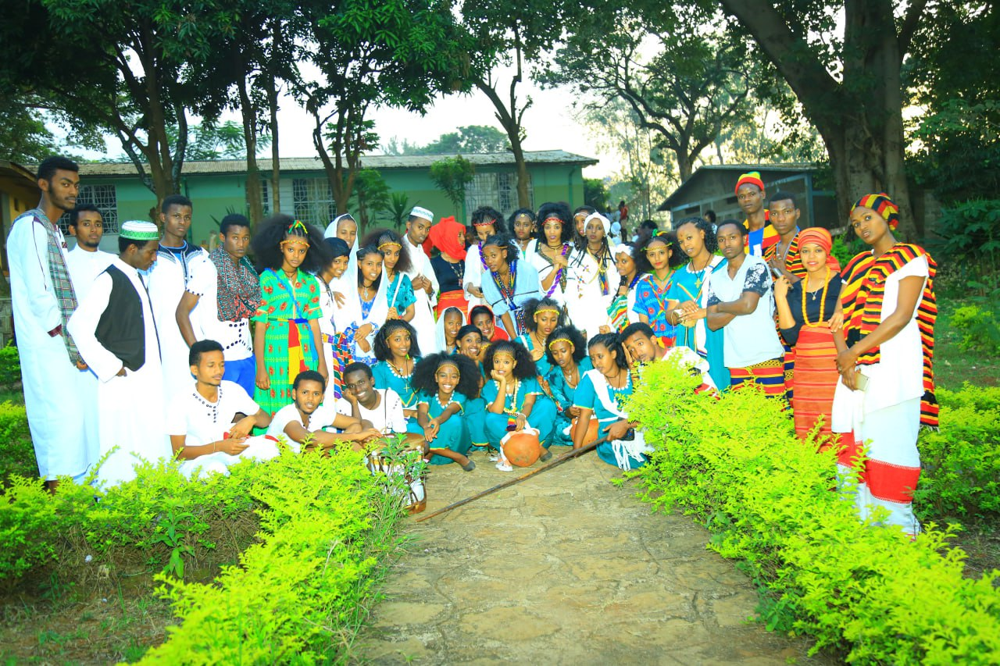
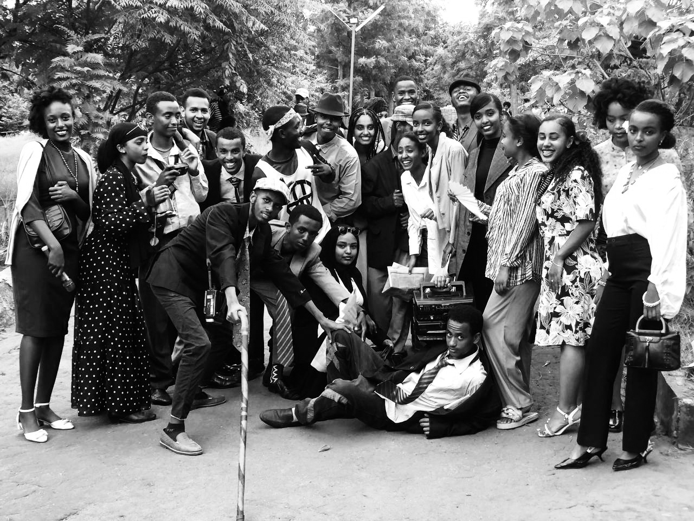

Students participate in various co-curricular activities in their respective schools, depending on their interests and inclinations. The club not only serves as a platform to integrate classroom learning with practice, but also helps students learn teamwork, learn leadership skills, express themselves effectively, strengthen their connection with their environment, and expand their horizons.
SOME OF THE CLUBS IN OUR SCHOOL ARE:
ICT CLUB
CHARITY CLUB
GREEN CLUB
SPORT CLUB
SCIENCE CLUB
AND MANY MORE
The green club was istablished in April 13, 2010 through the “13 months of Solar Energy” project. students has been taking part of environment protection for more than five years.
The club has a moto of "our legacy a better earth". More than 50 students take part in the clubs regular activities every saturday.


The Information Communication Club was established in our school in 2003 . For 13+ years the club has been doing various activities inside and outside the school.
In terms of its established objective, it is making students have a special love and inclination for science and technology.
The Charity Club was established in our school in 2007 .For the past 8 years the club has performed several charitable activities such as organizing events and fundraisers to collect donation for several cause.
The Club also provide opportunities for students to volunteer their time and skills to make a positive impact on their communities.


In our school, students have various options for participating in sports activities. We offer a range of sports programs that students can participate in, including basketball, football, volleyball, track and field, and many others. These sports programs provide students with an opportunity to engage in physical activity, develop teamwork and leadership skills, and build friendships with their peers.


As we focus on acadamics most of the time, students organize several special days to break the routine and take a break. Apart from taking breaks those events has a significant values in our school as they promote the sense of community and create a fun and engaging way of learning. Most importantly it create a shared experience that brings people together and fosters a sense of unity.
CHRISTMASS
CULTURE DAY
FLAG DAY
WORKER DAY
OLDIES DAY
